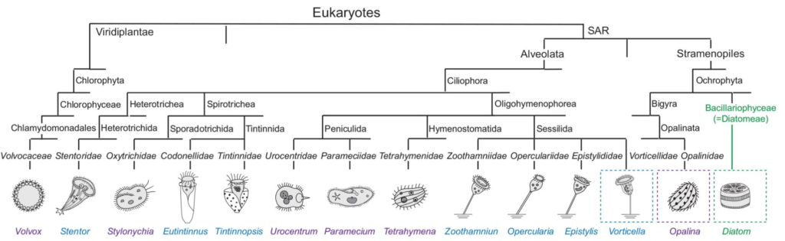
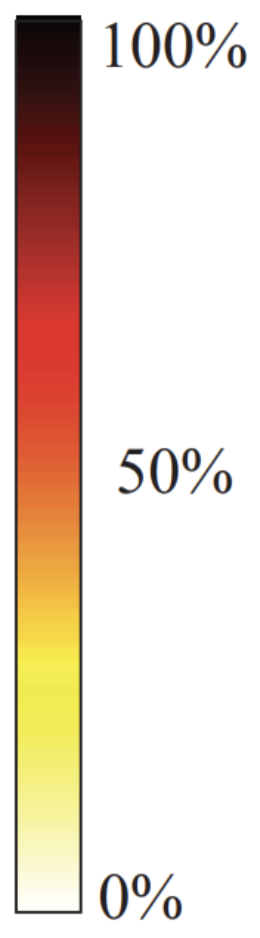
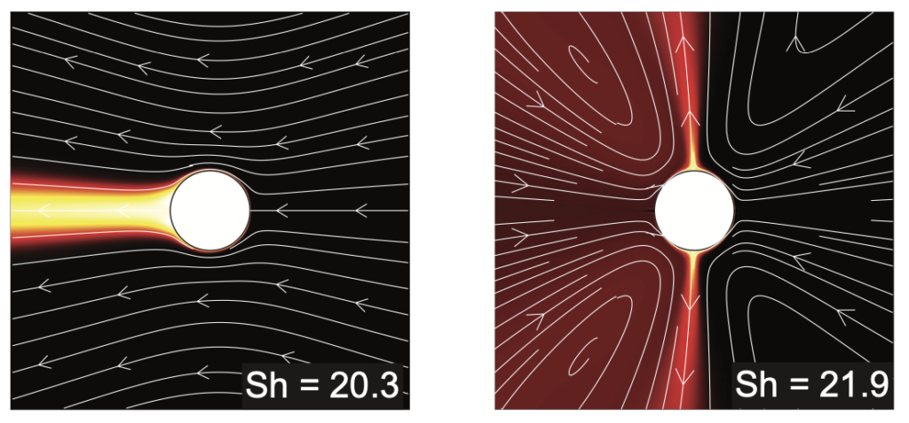

Flow Physics and Nutrient Transport in Ciliates
Feeding of attached and swimming ciliates achieve hydrodynamic equivalence

Flow physics imposes no constraint on the feeding rates that are achievable by the swimming versus sessile strategies – they can both be equally competitive in transporting nutrients and wastes. The evolutionary pressures that shaped “swim” and “stay” strategies acted in concert with, not against, flow physics [2].
Optimal feeding of attached ciliates depends on Péclet number


Under low Péclet number conditions, optimal feeding occurs via a ‘treadmill’ motion of surface cilia, regardless of the organism’s mobility. However, at high Péclet numbers, a symmetric dipolar surface velocity that keeps the organism stationary achieves near-optimal feeding performance for swimming ciliates and serves as an optimal solution for attached ciliates [1].
Feeding in non-uniform concentration field
References
- Liu, J., Man, Y., Costello, J. H., & Kanso, E. (2025). Optimal Feeding of Swimming and Attached Ciliates. Journal of Fluid Mechanics, 1003, A26.
- Liu, J., Man, Y., Costello, J. H., & Kanso, E. (2024). Feeding Rates in Sessile versus Motile Ciliates are Hydrodynamically Equivalent. eLife, 13.
- Liu, J., Man, Y. & Kanso, E. (2024). Nutrient Transport in Concentration Gradient.